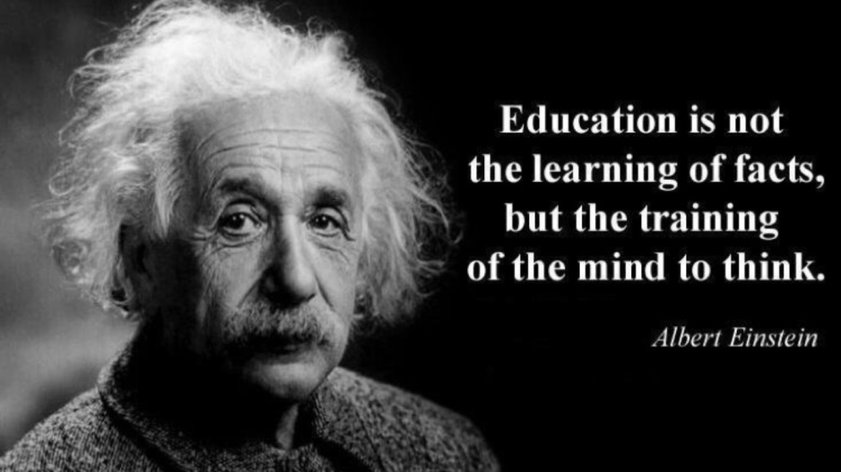

Konsten att tänka långa tankar tillsammans med barnen
Det är i förskolan barnen lever sin barndom skriver Karin och Per Alnervik i sin bok om pedagogiskt ledarskap
Det är en hisnande tanke, eller hur?
Därför blir vår vision "ett gott liv" så viktig.
Hur du och jag lyckas möta barnen och varandra är grunden för en god kvalitet och ett gott liv.
I förskolan behöver vi hjälpa barnen att få tänka långa tankar för att få ett fördjupat och vidgat perspektiv.
Jag tänker att det utforskande/ projekterande förhållningsättet därför är centralt.
Just nu läser jag tillsammans med förskolecheferna Per och Karin Alnerviks bok; pedagogiskt ledarskap och kollegialt lärande i förskolan.
I boken definieras ett utforskande arbetssätt så här:
”Ett utforskande arbetssätt innebär att man inte vet hur arbetsresultatet kommer att bli i förväg.
I ett utforskande arbetssätt innefattas ett erbjudande av en undersökande miljö och närvarande pedagoger,
som ska möta barnen på olika sätt beroende på deras utveckling. I ett utforskande arbetssätt krävs också att material
förbereds och att man gör pedagogisk dokumentation”.
Jaa, ord... hur blir ord en pedagogisk praktik? Vilken historia har vi skrivit i Oskarshamns förskolor?
Vad har vi varit en del av när vi tänker kring utvecklingen av våra förskolor?
Nya idéer kommer och gamla läggs åt sidan, eller gör de det? Blir tidigare erfarenheter kanske mer ett filter som nya idéer tolkas utifrån?
Vilken skillnad blev det egentligen när vi gick ifrån att arbeta med portfolio till att försöka använda verktyget pedagogisk dokumentation
(i den form som Skolverkets stödmaterial visar)?
Vad blev det för skillnad för barnen när vi använde portfolion för att synliggöra barns utveckling och lärande i
jämförelse med när vi nu försöker att närma oss pedagogisk dokumentation?
Hur kunde portfolion se ut och vad i den visade utveckling och lärande?
Var den kanske mer på individnivå än lärandet som sker i grupp?
Den portfolio jag själv använde mig av grundade sig mycket på ett utvecklingsosykoligiskt perspektiv med traditionella områden som:
- Jag
- Min familj
- Närmiljön
- Utveckling social och motorisk
- Mm mm...
Hand och fotavtryck som alla barn skulle göra varje år var viktigt. Varför var det viktigt?
Förstås handlade det om att på något sätt visa på barnets fysiska utveckling och samtala med barnen om det.
Idag skulle jag nog mer säga att det är viktigt att barnens tankar får ge avtryck i verksamheten.
Hur ger vi barn möjlighet att få utrymme för långa tankar så att barnens tankar ger avtryck och sätter spår i verksamheten?

Jag tror att vi behöver hjälpas åt med att förstå och också hitta verktyg som hjälper oss att få fatt i barnens tankar och erfarenheter som blir utgångspunkt för projektet som vi tillsammans fördjupar oss i.
Här blir pedagogisk dokumentation och gemensam reflektion central. Att jobba i power point med vecko- och månadsreflektion tror jag är ett bra sätt.
Att vi också utformar miljöer och låter material flytta in som gör det möjligt för barnen att fortsätta undersöka så att pinnen som barnet
(på den inledande bilden) hittar kan följa med till förskolan, kanske blir det ett projekt kring pinnens liv?
Jag försöker att systematiskt vara ute i verksamheten i kvalitetsdialoger för att få fatt i och kanske också stödja i arbetet med de projekt och det systematiska kvalitetsarbete som pågår.
På måndag (1/10) har jag förmånen att vara på Majbackens förskola. Där ska vi tillsammans fördjupa oss kring reflektion och dokumentation, spännande!
Nästa måndag (8/10) får jag vara med i Påskallaviks förskola.
På pedagogiska måndagen den 15/10 möter jag pedagoger på Klockarebackens
förskola och vi ska fördjupa oss i digitala verktyg och att arbeta i processer tillsammans med barnen.
Att vara ute i verksamheten och möta er och barnen är alltid veckans höjdpunkt!
DU ÄR VIKTIG OCH DU GÖR SKILLNAD!
/Ulrika Mellblom
Nytt läsår, woaw så spännande!
Varmt välkommen tillbaka till ett nytt läsår med många möjligheter till utveckling och lärande för oss alla!
Efter en på många sätt fantastisk sommar med sköna, varma och lata dagar, ser jag nu fram emot ett nytt läsår.
Det är väl samtidigt så att den torra sommaren har väckt funderingar kring miljö- och klimatfrågan.
Förskolan har en viktig uppgift att arbeta tillsammans med barnen för en hållbar och hoppfull framtid, eller hur?
Nu känns det fint att få välkomna nya och gamla barn och föräldrar till våra förskolor!
Det är i varje möte med barnen, föräldrarna och din kollega som en god kvalitet skapas i våra förskolor.
Forskning är entydig i att nära pedagogiska relationer är A och O för barns utveckling och lärande.
Vetenskapsrådets rapport (2015) visar att de pedagogiska relationerna mellan förskolepersonal och barn är viktigast för utveckling och lärande på kort och på lång sikt.
”Kvaliteten i förskoleverksamheten avgörs därmed i det konkreta mötet med barnet.
Förskolepersonalens förmåga att kommunicera, lyssna på barnen i en
dialog och utmana deras föreställningar om ett fenomen eller lärandeobjekt är ett stöd för barnens utvidgade lärande,
men också ett kännetecken på att barnen tas på allvar, vilket har samband med deras känsla av självkompetens”.
Du är viktig och du gör skillnad.
Att iscensätta mötesplatser
Nu när vi välkomnar barnen till våra förskolor blir de miljöer vi iscensätter avgörande för möten mellan barnen.
På samma sätt är också olika material viktiga eftersom även material är aktiva agenter som på olika sätt bidrar till att skapa relationer.
Jag bifogar en Länk till
Linda Linders blogg som inspiration i arbetet med att iscensätta miljöer.
Stolt och glad
Nu har jag varit på plats i mitt uppdrag som verksamhetschef för förskolorna i snart ett år.
Under året har jag varit runt i alla förskolor och jag känner mig stolt och glad över förtroendet att få vara en
del av och leda förskoleområdets verksamhet. Under läsåret kommer vi att mötas i kvalitetsdialoger.
Jag kommer till förskolorna och är med i verksamheten, sedan för vi samtal kring det systematiska kvalitetsarbetet.
Jag ser fram emot att få ta del av den gemensamma reflektionen kring den pedagogiska dokumentationen.
Under en tid har jag haft förmånen att läsa varje förskolechefs analys av det arbete som pågår i våra förskolor och
utifrån detta har jag försökt att beskriva och analysera förskolornas resultat och utvecklingsbehov ur ett övergripande
perspektiv. Detta är ett arbete som inte så enkelt låter sig göras. Det är med stor ödmjukhet och respekt för det
arbete du utför som jag tillsammans med förskolecheferna har försökt att identifiera utvecklingsområden.
Att konkretisera våra löften
Jag ser fram emot ett läsår när vi på olika sätt kommer att arbeta vidare med att konkretisera våra löften och fundera
över hur vi ska leva våra löften på förskolorna.
I förskolans ledningsgrupp har vi inlett detta med en gemensam löftesdag som vi kommer att fortsätta med vid
förskolechefernas gemensamma uppstartsdagar den 23/8 och 24/8. Löftena kommer att ligga till grund för arbetet med
gemensamma ställningstaganden kring en likvärdig förskola i kommunen.
Vi bygger nätverk för vi vill lära oss av varandra
Under hösten kommer två nätverk att vara levande. Det ena nätverket kommer att fördjupa sig kring pedagogisk
dokumentation och ett projekterande arbetssätt. Om du vill vara med i detta nätverk pratar du med din förskolechef.
Det andra nätverket fokuserar kring hur digitala verktyg kan göra skillnad för lärandet och hur
barnen kan bli mer av producenter än konsumenter. Nätverket för digitala verktyg kommer IKT-ombuden på förskolorna att vara med i.
Datum för nätverksträffarna finns inlagda i kalendariet.
Under hösten finns några olika arbetsgrupper
- Arbetsgrupp för rekrytering
- Arbetsgrupp som följer upp pedagogiska måndagar
- Arbetsgrupp för utformning av ev lönekriterier
En gemensam horisont
Jag har under en tid funderat över hur jag på bästa sätt ska kommunicera med dig som arbetar i våra förskolor,
jag har också ställt frågan till förskoleområdets samverkansgrupp och fick då tipset om att på något sätt
kommunicera via en blogg. Så därför har jag nu skapat en blogg med namnet ”gemensam horisont”.
Du kanske undrar över namnet, att bygga en gemensam horisont, vad kan det innebära?
Jag tänker att förskoleområdets utveckling kommer att handla om att vi TILLSAMMANS får ett gemensamt
perspektiv kring vilken förskola vi ska erbjuda alla barn i hela vår kommun, alltså att bygga en gemensam
horisont.
På bloggen kommer jag att publicera nya inlägg, det kan handla om kvalitetsdialoger från verksamheten,
pedagogiska ställningstaganden eller tankar som jag hoppas kan bidra i ditt arbete tillsammans med våra barn.
DU ÄR VIKTIG OCH DU GÖR SKILLNAD!
/Ulrika Mellblom